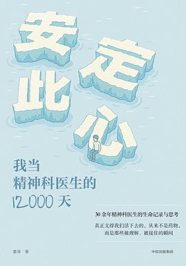

《安定此心》

总体观点
精神疾病绝不是什么‘想不开’或‘性格软弱’，而是一种具有明确生物学脑神经递质改变、心理认知创伤与社会环境压力交织的客观临床疾患。
在精神专科医院这扇特殊的窗口前，展现的是当代高压转型期中国家庭与个体的深层撕裂：对完美的病态苛求、情感忽视的代际传递与对病耻感的恐惧，构成了无数悲剧的共同温床。
治愈心灵必须破除‘唯意志论’与‘病耻感迷思’：科学的药物干预筑牢神经生物学底座，温暖共情的心理支持重塑认知，家庭系统的觉醒才是患者彻底走出心理绝境的长久防线。
核心观点
-
1. 精神障碍是脑部生病，把抑郁归结为‘心胸狭窄’是残忍的二次伤害
重度抑郁症患者大脑突触间隙的5-羟色胺和多巴胺等神经递质严重失衡，此时强求患者‘坚强乐观’就像逼骨折病人立刻跑步。
高三尖子生突然无法起床上学，父母认定其‘装病逃避’进行严厉斥责，直至送医脑电图与量表评估才发现其已达到重度内源性抑郁状态。 -
2. 双相情感障碍是极易被误诊的‘情绪过山车’
患者在躁狂期的亢奋吹嘘、疯狂挥霍常被误以为精力充沛，而随之跌入的深渊期才被当成普通抑郁，单用抗抑郁药极易诱发转躁。
一名中年男子一周内不睡觉连续签订数百万虚假合同并狂躁送礼，家人以为其‘创业发财’，几天后却陷入绝望自责企图跳楼。 -
3. 精神科封闭病房不是‘疯人院’，而是替失控灵魂筑起的生命安全舱
在患者极度自伤或冲动冲向绝境的急性发作期，封闭环境提供的物理隔离与24小时严密监护，是保全生命的最强防线。
重度产后抑郁伴幻听的年轻母亲坚信‘孩子被恶魔附身’，正是封闭病房及时的物理看护与电休克治疗（MECT），挽救了母子两条生命。 -
4. 许多所谓的‘问题少年’，背后往往站着重度焦虑失控的‘问题父母’
青少年自伤划臂、厌学与躯体化呕吐腹痛，本质上是家庭系统冲突的替罪羊，是孩子在用自己的肉体痛苦呼救并调节父母婚姻裂痕。
初二女生反复胃痛休学，全家就医无果，家庭治疗中发现只要她一生病，常年分居闹离婚的父母就会立即停止争吵坐在床前共同照顾她。 -
5. 不要妖魔化精神科药物：它不是‘吃傻人的毒药’，而是帮大脑浮出水面的救生圈
现代新型精神药物副作用已大幅降低且不具成瘾性，遵医嘱足量足疗程服药是防止病情反复发作演变为难治性慢性病的关键。
许多患者因害怕‘依赖性’在症状刚有起色时擅自骤停抗抑郁药，导致脑内受体剧烈反跳，引发比之前凶险数倍的复发危象。 -
6. 心理健康的终极标志是学会‘接纳不完美并与症状共存’
追求‘一辈子永远没有任何负面情绪’本身就是最大的心理执念，学会带着焦虑去生活、在裂痕中寻找微光才是真成熟。
经历系统治疗康复后的职场青年，不再强求自己必须成为全公司业绩第一的卷王，而是学会下班后散步种花，情绪终于恢复平稳。
全书结构
-
第一章 欢迎来到精神科
真实记录北京安定医院精神科急诊与门诊的生死一瞬，讲述精神科医生初入行时的心理冲击，以及重性精神障碍患者在现实与幻觉夹缝中的痛苦挣扎。
诊室接待一位坚信自己五脏六腑皆已腐烂衰竭的虚无妄想（科塔尔综合征）患者，医生在药物干预同时以专业共情稳住患者濒临崩溃的精神意志。 -
第二章 双向拯救
深入双相情感障碍（躁郁症）的幽暗与狂欢，记录狂躁期一掷千金、精力无限与抑郁期坠入绝望深渊的极端摆荡，以及长程心境稳定剂治疗实录。
一位创业青年在躁狂发作期几天不睡创办三家公司并四处借贷，转入抑郁期后却整日拉黑窗帘缩在床角尝试自残，医生团队通过锂盐治疗结合心理监护帮助其心境重回平衡。 -
第三章 饥饿游戏
剖析神经性厌食症与贪食症背后扭曲的身体意象，揭示青少年进食障碍深层隐藏的病态母女共生控制与窒息家庭动力学。
高三女生体重骤降至28公斤被送进重症病房，母亲在病床前仍不断强调“女孩胖了没前途”，医生果断启动家庭系统治疗，将治疗重心从“秤盘上的数字”转向松绑窒息的母女控制。 -
第四章 “罩子”里的孩子
直击现代都市青少年抑郁症与非自杀性自伤（NSSI）高发潮，剖析“直升机父母”以爱为名的高压期望如何将孩子逼入精神崩塌的绝境。
重点高中尖子生用美工刀在手臂割下数十道伤口，自述“只有看到血流出来，我才能感觉自己还真实活着”，医生与父母开展家庭对话，揭露“孩子是在替整个家庭生病”的残酷真相。 -
第五章 身体里的陌生人
解密躯体化障碍与疑病症的躯体化机制，患者反复辗转于各大综合医院心内科、消化科做遍全身检查无器质性病变，潜意识中用身体疼痛诉说心理创伤。
退休教师持续胸闷剧痛濒死感十年，随身携带速效救心丸，最终在精神科通过抗抑郁药物改善神经递质紊乱，多年“心脏怪病”神奇缓解。 -
第六章 永远不会有答案
呈现精神分裂症紧张型木僵状态的诊疗现场，探讨精神科面对无知觉、拒食患者的紧急电休克（MECT）干预与重性精神疾病的伦理困局。
一位长期木僵如木偶般维持僵硬姿势数小时不动的患者，在接受改良电休克治疗后苏醒，流下眼泪说出心中长期被无形怪物追杀的恐怖幻觉。 -
第七章 她的9张面孔
记录罕见的分离性身份障碍（多重人格障碍）病例，解构极度严重的童年躯体与精神虐待如何迫使大脑分裂出不同人格来抵御灭顶之灾。
青年女性在诊室中数秒内切换出冷酷护卫、哭泣幼女及愤怒少年等完全不同的声音与眼神，甚至掏出刀具防卫，医生在漫长会谈中建立跨人格信任逐步促成人格融合。 -
第八章 家族的魔咒
探讨内源性抑郁症的家族遗传易感性，破除社会对精神疾病的“意志软弱”偏见与病耻感，科普正规足量足疗程精神药物治疗的核心价值。
一家三代皆有抑郁自杀史的家族，年轻一代在出现早醒与严重晨重夜轻时被斥责为“懒惰脆弱”，直到在安定医院确诊并坚持服药数月后重返职场，破除所谓“家族诅咒”。 -
第九章 被声音包围的人
走入精神分裂症患者由命令性幻听构筑的恐怖世界，讲述幻听如何驱使患者自伤或攻击他人，以及抗精神病药配合现实检验重建感官边界。
年轻女孩耳边时刻回响着三个不同声音指责她是“罪人”并命令她跳窗，姜医生通过精准调整非典型抗精神病药剂量，逐步降低幻听音量，帮助患者重新掌握身体控制权。 -
第十章 当爱被困住
剖析罕见的变兽妄想（狼人综合征）等重度精神病性症状，讲述家属在漫长看护过程中的身心耗竭与接纳慢性精神疾病共处的艰难历程。
患者坚信自己每到深夜便化身为野兽撕咬被褥，老父亲多年如一日悉心看护从未放弃，医生在药物控制症状的同时建立家属互助支持网络，挽救濒临崩溃的看护者。 -
第十一章 不原谅也没关系
总结三万天精神科临床生涯的人生哲学，直面原生家庭创伤与人生至暗时刻，倡导接纳不完美的自我、走出病耻感，以及“不原谅也没关系”的心理治愈力量。
长期遭受原生家庭精神暴力的抑郁康复者最终不再执着于强求父母的道歉与和解，而是划定清晰的心理边界，在安定医院精神科的陪伴下独立重构属于自己的崭新生活。